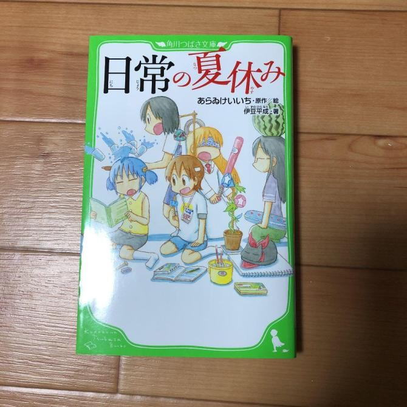

Bắt đầu đọc¶
Việc đọc Tiếng Nhật là RẤT QUAN TRỌNG . Việc học cách đọc Tiếng Nhật cũng quan trọng không kém. Bạn thường nghe mọi người hỏi “Có thể học Tiếng Nhật mà không cần học cách đọc không?”. Hoàn toàn có thể, nếu bạn không cảm thấy cần phải hiểu ngữ pháp cơ bản và có vốn từ vựng rất khiêm tốn sau nhiều năm học.
Như đã nói, có thể việc học cách đọc khiến bạn cảm thấy khó khăn, xét cho cùng thì có quá nhiều Kanji khác nhau chỉ trong một trang! Lần đầu đọc một quyển sách sẽ rất khó khăn, bạn chỉ cần vượt qua được trở ngại ấy và theo thời gian, bạn sẽ trở nên tự tin hơn và đọc tốt hơn. Và nếu có ai thắc mắc về làm thế nào để tìm cách đọc các từ Tiếng Nhật lẫn nghĩa thì hãy đọc bài này tiếp, có một số công cụ nhất định cho phép bạn làm điều này này một cách dễ dàng. Trước khi bắt đầu đọc, bạn cần phải hoàn thiện một bộ thẻ Anki đã được làm sẵn cho bạn chẳng hạn như bộ Kaishi 1.5k và những hướng dẫn ngữ pháp như của Tae Kim hoặc Cure Dolly, điều này giúp quá trình đọc bớt khó khăn hơn vì khi đọc sẽ có kha khá từ bạn biết (Thông qua việc học ở trên). Thứ hai, bạn nên thực hiện Immersion nghe trước vì 1. tránh mắc vấn đề về phát âm tệ và 2. nó giúp bạn phân tích câu tốt hơn khi đọc.
Những key point¶
- Việc học đọc lúc đầu sẽ luôn có rất nhiều vấn đề. Không nên đợi “cho đến khi mình sẵn sàng” bởi vì bạn sẽ không bao giờ sẵn sàng cho đến khi bạn bắt đầu đọc.
- Bạn không nên bắt đầu đọc ngay khi bạn chưa nghe nhiều trước đó. Bạn nên có trong mình sự cảm nhận về ngôn ngữ, về âm điệu và phát âm thế nào trước khi cố gắng tự tái tạo những phần âm đó trong đầu (đó là những gì bạn làm khi bạn đọc)
- Đừng lo lắng về việc không hiểu một câu cho dù bạn có đọc nó bao nhiêu lần đi chăng nữa, nói cách khác, hãy học cách chấp nhận sự mù mờ . Mọi thứ sẽ trở nên rõ ràng hơn khi bạn đọc nhiều hơn.
- Nếu bạn ghét đọc sách nói chung, bạn có thể chơi visual novel hoặc đọc manga, cả hai đều rất tốt cho việc luyện đọc.
- Cuốn sách/tiểu thuyết đầu tiên sẽ luôn luôn khiến bạn "thống khổ". Hãy vượt qua nó cho dù nó có khó khăn đến thế nào đi nữa hay bạn mất bao lâu đi nữa.
- Đừng nóng vội. Hãy dành thêm thời gian của bạn. Đi theo tốc độ của riêng bạn. Bạn sẽ không muốn bản thân mình cảm thấy kiệt sức và không bao giờ còn muốn đọc thêm bất cứ điều gì nữa.
Học cách đọc¶
Như đã nói trước đó, hãy đảm bảo bạn có một vốn từ vựng tương đối (giả sử bạn đã hoàn thành bộ Anki lúc đầu đó) và đã hiểu tương đối ngữ pháp Tiếng Nhật trước khi đọc, mọi việc sẽ trở nên dễ dàng hơn nhiều.
Phụ đề Tiếng Nhật¶
Phụ đề Tiếng Nhật là một cách tương đối tốt để mở đầu cho việc luyện đọc, việc cố gắng đọc phụ đề có thể khó khăn đôi chút nhưng tương đối vui và nó cũng sẽ giúp bạn hiểu hơn về những gì bạn đang xem. Một số công cụ nhất định cho phép bạn dễ dàng tra từ trong từ điển. Bạn có thể sử dụng Anacreon MPV Script kèm với Yomichan.
Manga¶
Manga có lẽ là cách tốt nhất để bắt đầu tập đọc mà không khiến bạn cảm thấy nản vì cách viết của nó tương đối giống như cách nói Tiếng Nhật và giả sử bạn đã cảm thấy khá quen với ngôn ngữ nói rồi thì việc làm quen với Manga sẽ không gặp nhiều khó khăn. Và nếu chưa quen thì bạn sẽ sớm quen thôi, sau khi đọc manga và xem Anime bằng Tiếng Nhật.

*Manga: Mahou Shoujo Madoka Magica
Như bạn có thể thấy, manga sử dụng cả 3 hệ thống chữ viết là hiragana, katakana và kanji, do đó manga có thể là một cách tuyệt vời để rèn luyện kỹ năng của bạn trong cả 3 phần. Nhưng còn việc tra từ thì sao? Nó là ảnh mà? Poricom là một phần mềm giúp việc tra từ trong manga dễ dàng hơn. Bạn có thể tìm nó ở đây. Đối với người dùng Android thì có thể sử dụng OCR Manga Reader. Đối với người dùng iOS thì có thể sử dụng Kantan Manga Reader
Manga sẽ khá khó trôi về đầu nhưng dần dần nó sẽ trở nên dễ dàng hơn. Bạn chỉ cần đọc thêm nhiều hơn. Bạn chỉ cần đọc nhiều hơn nữa, đọc rất nhiều.
Tiểu Thuyết/Light Novels¶
Ngay cả khi bạn đã đọc khoảng 100 quyển manga, bạn vẫn cần đọc tiểu thuyết vì sẽ có những từ bạn vẫn không biết, đồng thời rất nhiều từ chỉ thường được sử dụng trong văn viết.
Văn học Tiếng Nhật không khó như bạn nghĩ, nó chỉ khác một chút so với Tiếng Nhật hội thoại và sẽ quen dần thôi. Để đọc Light Novel, bạn có thể sử dụng Yomichan , bạn có thể xem hướng dẫn cài đặt [ở đây]
Bạn nên đọc (shoui khuyên bạn nên đọc) tiểu thuyết trên trang này: Itazuraneko Old Library, sắp xếp theo số lượng Kanji, thường từ khoảng 1.000-1.600 Kanji là ổn, điều này chỉ có nghĩa là cuốn sách dài bao nhiêu nếu bạn đi tìm hiểu thêm về nó. Nếu bạn dùng Android, bạn nên dùng Typhon Reader hoặc Typhon改 nếu ứng dụng kia không dùng được. Bạn cũng có thể truy cập danh sách epub đầy đủ nhưng cảnh báo: bạn cần một chiếc điện thoại ổn để tải trang đấy vì sẽ có RẤT NHIỀU sách! Nếu bạn không thể tìm được cuốn sách mình muốn trên Itazuraneko, bạn có thể thử tìm trên Boroboro . Người dùng iOS có thể sử dụng ứng dụng Books với các tệp epub.
Quyển sách đầu tiên sẽ là trải nghiệm kinh hoàng, nhưng sang quyển thứ hai thì sẽ đỡ mệt hơn. Mới đầu một cuốn light novel sẽ cần khoảng 1-3 tháng để đọc xong khi bạn mới đọc lần đầu, rồi nó sẽ nhanh hơn (mình (shoui) có thể đọc xong một quyển trong khoảng 10 tiếng). Chỉ cần đọc nhiều hơn, đọc nhiều hơn.
Không nên đọc bản scan hay sách giấy vì rất khó để tra cứu từ trong đó.
Lưu ý: Mình không phản đối 縦書き, (văn bản hiển thị dưới dạng cột dọc, hay thấy ở các sách Tiếng Nhật và Tiếng Trung), hình ảnh bên dưới là một ví dụ về bản scan .
 Novel: Hibike! Euphonium
Novel: Hibike! Euphonium

Novel: Nichijou no NatsuyasumiBạn cần đọc những thứ như thế này:
 Novel: Kimi no Na wa.
Novel: Kimi no Na wa.
Click to enlarge
Đây là bản điện tử . Cực kì cần thiết. Mình có thể chọn văn bản và sử dụng Yomichan với nó.
Visual Novels¶
 Visual Novel: Angel Beats! -1st beat-
Visual Novel: Angel Beats! -1st beat-
Nếu bạn ghét đọc sách thì có thể bạn sẽ muốn luyện đọc trên Visual Novel. Nó đã giúp mình tăng cường khả năng đọc. Nó cũng tương tự như việc xem Anime có phụ đề Nhật. Bạn có thể sẽ muốn tạo AnimeCards từ đó và sử dụng như việc thực hành Immersion nửa nghe nửa đọc.
Mình hoàn toàn gợi ý VN cho những người không muốn đọc light novel.
Chỉ cần đảm bảo rằng bạn đã cài đặt texthooking, bạn có thể đọc cách cài tại đây. Để giỏi đọc VN hơn, bạn chỉ cần đọc nhiều, chỉ cần đọc nhiều thôi.
Kết¶
Đừng quá lo lắng về việc bạn “biết” bao nhiêu chữ "kanji". Bạn có thể bắt đầu đọc sau khi đã có đủ trải nghiệm nghe và đã hoàn thành phần hướng dẫn ngữ pháp hoặc cái gì đó tương tự. Vậy đó. Đừng ngần ngại. Đừng cảm thấy “chưa sẵn sàng” vì bạn sẽ chẳng bao giờ sẵn sàng nếu bạn không bắt đầu đọc. Đọc nhiều hơn và đọc nhiều hơn là cách để bạn đọc tốt hơn. Không có mẹo vặt, không có đường tắt.
Have fun immersing!